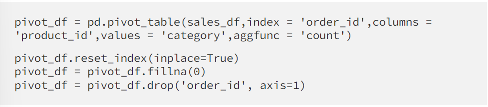
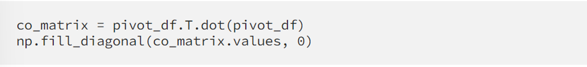
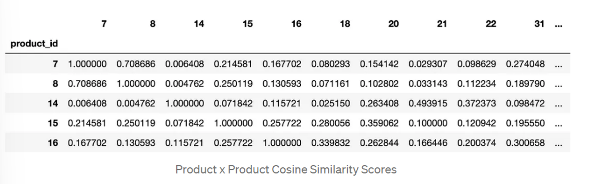

Abstract
The recommendation system we built is based on item-item collaborative filtering. We’ll build a multi dimensional vector representation of a product via a co-occurrence matrix and find similar products measured by the cosine similarity between all product vectors.
In terms of application, this system was built to power e-commerce product to product recommendations. For example when a customer clicks on a product, most sites will show a product detail page (PDP) and commonly you might see more products shared on that page under headings such as ‘You Might Also Like’ or ‘Similar Products’.
Concept of Co-occurrence Matrix
 The data that we utilized was simply customer order data and specifically we were interested in orders where products are purchased with other products.
The data that we utilized was simply customer order data and specifically we were interested in orders where products are purchased with other products.
We have 3 unique items, two different colored tooth brushes which were both independently purchased with toothpaste. Using this information we are able to build a bridge from the blue toothbrush to the green toothbrush via the toothpaste.

Now imagine that we have thousands of orders. You’d probably expect that both colors of toothbrushes occur with things like floss, mouthwash, etc. We can utilize these co-occurrence of products to build a multi dimensional vector representation of all the products in our catalogue.
Cosine Similarity
To determine if a product is similar to another product we take the cosine similarity between their vector representations from our co-occurrence matrix and receive a score between -1 and 1. A score of 1 are vectors that are in the same direction and a score of -1 is an opposite vector.
Data
As mentioned earlier our data is customer order data. For most datasets you’ll probably want to join an order level table to an order line level table so you can see all the items that occurred within a specific order id.

Model Code
Library Dependencies:

We first loaded customer order data in the format above as a pandas data frame named sales_df.
Next we pivoted it where each row is an order and each column is a product and the values are the counts of the products in each of the orders.
Once you’ve loaded your data you’ll need to pivot it where each row is an order and each column is a product and the values are the counts of the products in each of the orders.

Next we transform our pivot table into a co-occurrence matrix by taking the dot product of the pivot table and its transpose. And to transform the co-occurrence matrix into a matrix of cosine similarities between our products we utilize the cosine_similarity function from sklearn.


Model Validation
For Each Product Category:
Count(Best Recommendation for Each Product in Category)/ Count(Products in Category) = % of Recommendations in Same Category This was to have limited and most suitable products.
Example:
We had 735 wellness products we generated recommendations for and based on our best cosine similarity for each wellness product we had 720 recommendations that were in the wellness category, or 98% same category recommendations. With such a high percentage of same category recommendations we can feel more confident that we have a strong signal in our purchase data to power our model.
Performed an AB test to limit the output and avoid any random product to be recommended with out any context.
To find the right sample size threshold for your model you can evaluate the model validation metric (% of Recommendations in Same Category)
Deployment
We output a JSON file with the top n recommendations into an S3 bucket. This JSON file is then picked up by our platform engineering team and loaded into a Postgres database which will be used to serve products on the front end. Generated Top Five Highest Scoring Recommendations and JSON Output
Conclusion
With that we have created an end to end product recommendation system for similar products simply with historical sales data. With all models the quality of your model outputs will be dependent on the quality of your data.